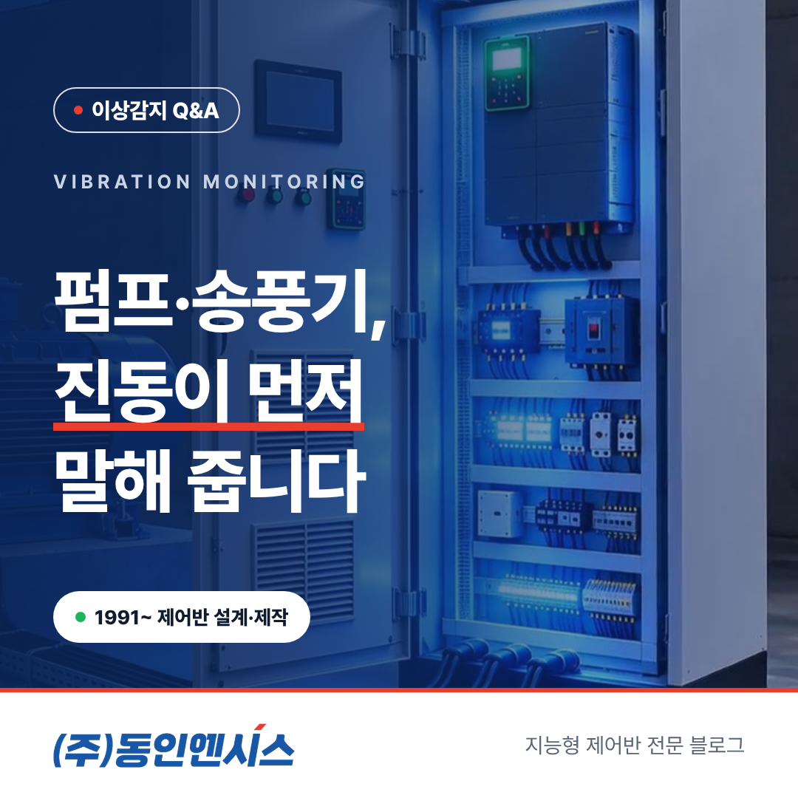
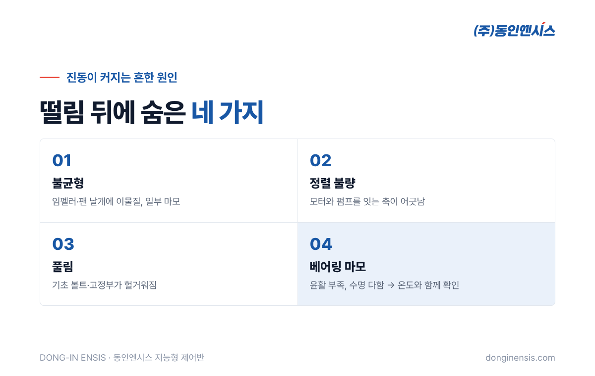
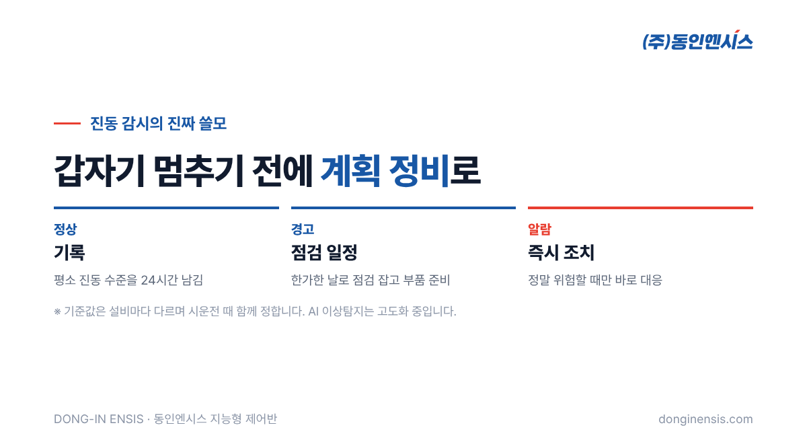

펌프나 송풍기가 고장 나기 전, 가장 먼저 달라지는 것 가운데 하나가 '떨림'입니다. 현장 베테랑은 손바닥을 대 보거나 소리만 듣고도 "오늘 좀 이상한데" 하고 알아챕니다. 이 글은 공장 설비의 제어반을 직접 설계·제작하는 동인엔시스가 설비 진동 감시에 대해 현장에서 자주 받는 질문 10가지를 모아 답한 것입니다. 무엇을 보면 되는지, 어떻게 시작하면 되는지 순서대로 정리했습니다.
Q1. 왜 하필 진동인가요? 온도만 봐도 되지 않나요? 온도와 진동은 서로 다른 이야기를 해 줍니다. 온도는 부하나 마찰이 쌓인 결과로 천천히 오르는 편이고, 진동은 회전하는 부품의 상태가 달라지는 순간부터 모양이 바뀌기 시작합니다. 그래서 진동을 함께 보면 온도만 볼 때보다 이상을 더 일찍, 그리고 원인 쪽을 더 분명하게 짐작할 수 있습니다. 둘 중 하나를 고르기보다 함께 보는 것을 권합니다.
Q2. 진동이 커지면 보통 무엇이 문제인가요? 회전 설비에서 흔히 꼽는 원인은 네 가지입니다.
원인마다 진동이 나타나는 모습이 조금씩 다르기 때문에, 언제부터 어떻게 변했는지 기록이 남아 있으면 점검할 곳을 훨씬 빨리 좁힐 수 있습니다.

Q3. 어떤 설비부터 진동을 보면 좋을까요? 멈추면 손해가 큰 회전 설비부터입니다. 공정 맨 앞의 송풍기, 냉각수를 돌리는 펌프, 24시간 쉬지 않는 압축기처럼 한 대가 서면 뒤 공정이 모두 기다려야 하는 설비가 1순위입니다. 사람이 자주 가기 어려운 지하 펌프실이나 옥상 기계실의 설비도 효과가 큽니다.
Q4. 휴대용 진동계로 순회 점검하는 것과 무엇이 다른가요? 휴대용 측정기는 그 순간의 값을 알려 줍니다. 반면 제어반이 센서 값을 계속 남기면 하루, 일주일, 한 달 동안의 흐름이 보입니다. 진동은 서서히 커지다가 어느 순간 급하게 나빠지는 경우가 많아서, 가끔 재는 값만으로는 그 '서서히' 구간을 놓치기 쉽습니다. 야간과 주말처럼 사람이 없는 시간의 변화도 기록으로 남는다는 점이 가장 큰 차이입니다.
Q5. 진동 센서는 어디에 다나요? 보통 베어링이 있는 위치 가까이, 모터와 펌프(또는 팬)의 하우징에 붙입니다. 진동이 가장 잘 전달되는 곳이 베어링 주변이기 때문입니다. 정확한 위치와 개수는 설비 구조와 설치 여건을 보고 현장 분석 때 정합니다.
Photorealistic close-up photo of a small industrial vibration sensor (accelerometer) mounted with a magnetic base on the bearing housing of a blue electric motor coupled to a centrifugal pump in a Korean factory, a shielded sensor cable running away in a flexible conduit, shallow depth of field, realistic industrial lighting, no brand logos, no readable text. 3:2 landscape.
Q6. 몇 정도면 위험한 건가요? 설비 종류와 크기, 설치 상태에 따라 기준이 달라서 숫자 하나로 말씀드리기 어렵습니다. 그래서 동인엔시스 지능형 제어반은 설비마다 평소 진동 수준을 먼저 확인한 뒤, 정상·경고·알람 세 단계 기준을 따로 정합니다. 기준값은 시운전과 안정화 단계에서 고객사와 함께 정하고, 운영하면서 계절이나 생산량 변화에 맞춰 조정합니다. 센서 하나라도 경고에 들어가면 그 설비가 경고로 표시돼 먼저 살펴볼 설비를 바로 알 수 있습니다.
Q7. 진동이 오르면 바로 설비를 세워야 하나요? 그렇지는 않습니다. 진동 감시의 진짜 쓸모는 '계획 정비'에 있습니다. 경고 단계에서 미리 알면 생산이 덜 바쁜 날로 점검 일정을 잡고, 필요한 부품을 미리 준비할 수 있습니다. 갑자기 멈춘 뒤 급하게 부품을 찾고 사람을 부르는 것과 비교하면 손실이 크게 줄어듭니다. 정말 위험한 알람 단계에서만 즉시 조치하면 됩니다.
Q8. AI가 진동을 보고 고장을 알아서 알려 주나요? 솔직하게 말씀드리면, 지금 바로 쓸 수 있는 기능은 기준값을 넘을 때 알려 주는 알람입니다. AI가 평소와 다른 미세한 패턴을 찾아내는 이상탐지는 실증을 거치며 고도화하는 단계입니다. 그래서 저희는 우선 진동 데이터를 꾸준히 쌓는 것부터 권합니다. 쌓인 기록이 있어야 나중에 어떤 분석 방법을 쓰든 출발할 수 있습니다.
Q9. 진동 기록은 어디서, 어떻게 보나요? 웹 화면에서 설비별 현재 상태와 지난 기록을 볼 수 있습니다. 하루 단위로 보면 운전 패턴이, 몇 주 단위로 보면 서서히 커지는 흐름이 보입니다. 같은 종류의 설비 여러 대를 나란히 비교하면 유독 많이 떨리는 설비가 바로 눈에 띕니다. 회사 보안 정책에 따라 클라우드 대신 사내 서버에 두는 방식도 가능합니다.
Q10. 다른 회사 제어반이 이미 붙어 있는 설비도 되나요? 가능한 방법을 함께 찾습니다. 제어반을 교체할 시기라면 지능형으로 바꾸는 것이 가장 간단하고, 아직 쓸 만하다면 기존 PLC의 값을 읽어 오면서 진동 센서를 추가하는 방법도 검토합니다.

진동 하나만 볼 때보다 온도·전류와 나란히 놓고 보면 짐작이 훨씬 구체적이 됩니다. 현장에서 자주 보는 조합을 정리하면 이렇습니다. 어디까지나 점검 순서를 정하는 데 쓰는 참고이고, 최종 판단은 현장 확인으로 합니다.
| 진동 | 함께 변한 값 | 먼저 의심해 볼 곳 |
|---|---|---|
| 천천히 커짐 | 베어링 온도도 함께 오름 | 베어링 윤활·마모 |
| 커짐 | 전류도 함께 늘어남 | 부하 증가, 이물질·막힘 |
| 갑자기 튐 | 다른 값은 그대로 | 고정부 풀림, 외부 충격 |
| 운전 속도 바꿀 때만 커짐 | — | 특정 회전수의 공진, 기초 상태 |
이런 비교가 가능하려면 진동·온도·전류가 같은 시각 기준으로 함께 남아 있어야 합니다. 설비 진동 감시를 따로 떼어 구축하기보다, 제어반에서 여러 값을 한꺼번에 기록하는 쪽이 유리한 이유입니다.
설비 진동 감시를 하려고 펌프나 송풍기를 바꿀 필요는 없습니다. 설비는 그대로 두고, 제어반을 교체하거나 새로 설치하면서 진동 센서와 온도·전류 값을 함께 모으는 방식입니다. 데이터를 모으는 장비를 따로 달지 않아도 되고, 제어반이 설비를 움직이는 동시에 그 상태를 24시간 기록합니다.
처음부터 모든 설비를 묶을 필요도 없습니다. 멈추면 가장 곤란한 설비 한두 대로 시작해, 진동 흐름을 몇 달 지켜보며 효과를 확인한 뒤 넓혀 가는 방식을 권합니다. 설치 후에는 원격 상태 확인과 정기 점검, 알람 기준 조정까지 함께 챙깁니다.
Photorealistic wide photo of a clean industrial blower room in a Korean plant: two large centrifugal blowers with electric motors on concrete foundations, large ducts rising to the ceiling, a light-grey control cabinet on the wall, yellow safety railings, cool daylight, no people, no brand logos, no readable text. 3:2 landscape.
진동은 설비가 보내는 가장 솔직한 신호 가운데 하나입니다. 다만 사람이 늘 곁에서 느낄 수는 없으니, 제어반이 대신 기억하게 만드는 것이 출발점입니다.
1991년부터 부산에서 산업 현장의 제어반을 만들어 온 동인엔시스가, 우리 공장 펌프와 송풍기에 진동 감시를 어떻게 붙이면 좋을지 함께 살펴 드립니다. 설비 목록을 홈페이지 진단 페이지에 남겨 주시면 엔지니어가 먼저 연락드립니다.
설비 상담 051-862-3668 · dongin@donginmne.com
아래 질문 중 하나에 실제 경험으로 답해 본문 적당한 곳에 넣어 주세요. 사람이 직접 쓴 문장이 들어가면 네이버에서 저품질 위험이 줄고 노출에 도움이 됩니다.